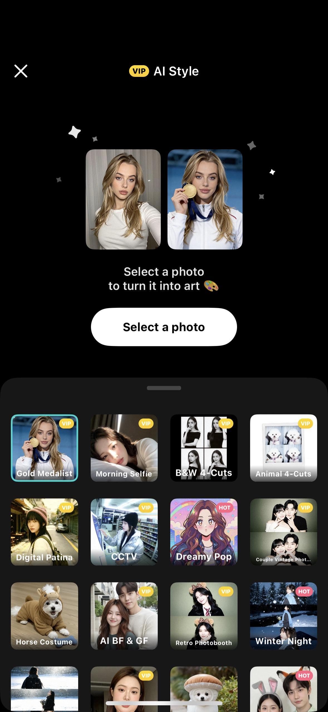
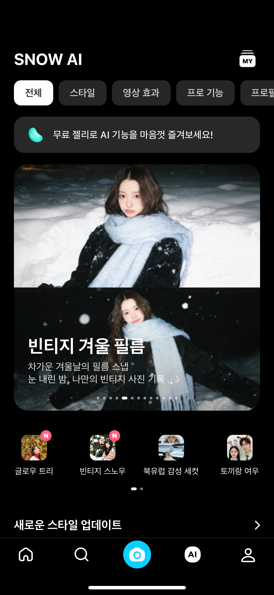
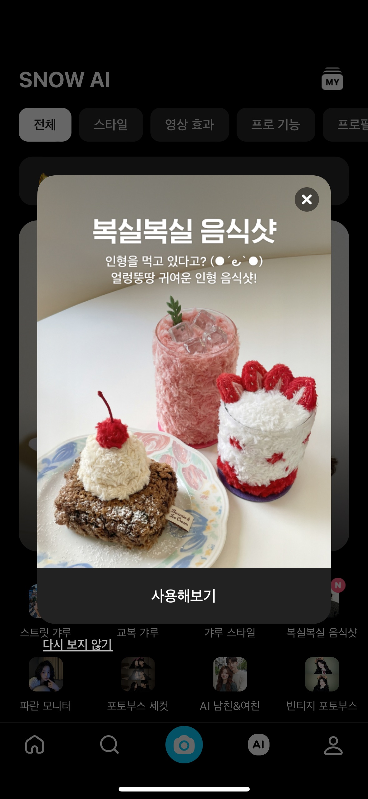
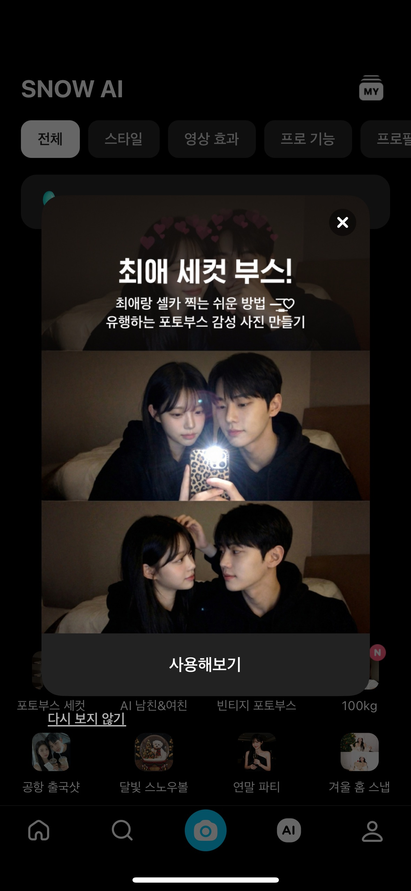

SNOW/B612 AI Style 콘텐츠 운영
데이터 기반의 AI 콘텐츠 운영







업무 요약
글로벌 카메라 서비스 SNOW, B612의 AI Style* 콘텐츠 전반을 운영했습니다.
*이용자가 선택한 사진을 AI API(Gemini, Seedream, GPT 등)를 통해 다양한 이미지로 변환해주는 콘텐츠
*이용자가 선택한 사진을 AI API(Gemini, Seedream, GPT 등)를 통해 다양한 이미지로 변환해주는 콘텐츠
업무 내용 · 전략
[WHY]
매주 지표를 확인하다 보니, 콘텐츠마다 생성 수는 높은데 저장률이 낮거나 반대로 성과 좋은 콘텐츠가 노출 하단에 묻혀있는 등 노출 구좌와 실제 성과가 어긋나는 경우가 반복됨
[REASON]
저장률이 낮은 콘텐츠는 결과물 확인 단계의 UX 오류나 안내 문구 부족이 원인이었고, 이는 매주 생성 수·저장률·구독 전환률을 추적하며 인사이트를 공유하는 과정에서 드러남
[HOW]
안내 문구 개선, 전환율 높은 콘텐츠는 상단 노출·인앱 프로모션으로 확장, 낮은 콘텐츠는 하단 배치하는 방식으로 노출 전략을 재구성
성과 · 결과
계약 종료 시점에 입사 직후 대비 평균 저장률 20% 상승